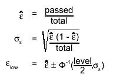

class TEfficiency: public TNamed, public TAttLine, public TAttFill, public TAttMarker
TEfficiency - a class to handle efficiency histograms
- Overview
- Creating a TEfficiency object
- Fill in events
- Statistic options
- Merging and combining TEfficiency objects
- Further operations
- TEfficiency class
I. Overview
This class handles the calculation of efficiencies and their uncertainties. It provides several statistical methods for calculating frequentist and bayesian confidence intervals as well as a function for combining several efficiencies.Efficiencies have a lot of applications and meanings but in principle they can be described by the fraction of good/passed events k out of sample containing N events. One is usually interested in the dependency of the efficiency on other (binned) variables. The number of passed and total events is therefore stored internally in two histograms (fTotalHistogram and fPassedHistogram). Then the efficiency as well as its upper and lower error an be calculated for each bin individually.
As the efficiency can be regarded as a parameter of a binomial distribution, the number of pass ed and total events must always be integer numbers. Therefore a filling with weights is not possible however you can assign a global weight to each TEfficiency object (SetWeight). It is necessary to create one TEfficiency object for each weight if you investigate a process involving different weights. This procedure needs more effort but enables you to re-use the filled object in cases where you want to change one or more weights. This would not be possible if all events with different weights were filled in the same histogram.
II. Creating a TEfficiency object
If you start a new analysis, it is highly recommended to use the TEfficiency class from the beginning. You can then use one of the constructors for fixed or variable bin size and your desired dimension. These constructors append the created TEfficiency object to the current directory. So it will be written automatically to a file during the next TFile::Write command.
Example:
create a twodimensional TEfficiency object with
- name = "eff"
- title = "my efficiency"
- axistitles: x, y and LaTeX formated epsilon as label for Z axis
- 10 bins with constant bin width (= 1) along X axis starting at 0 (lower edge
from first bin) upto 10 (upper edge of last bin)
- 20 bins with constant bin width (= 0.5) along Y axis starting at -5 (lower
edge from first bin) upto 5 (upper edge of last bin)
TEfficiency* pEff = new TEfficiency("eff","my efficiency;x;y;#epsilon",10,0,10,20,-5,5);
Example 1:
TEfficiency* pEff = 0;
TFile* pFile = new TFile("myfile.root","recreate");
//h_pass and h_total are valid and consistent histograms
if(TEfficiency::CheckConsistency(h_pass,h_total))
{
pEff = new TEfficiency(h_pass,h_total);
// this will write the TEfficiency object to "myfile.root"
// AND pEff will be attached to the current directory
pEff->Write();
}
Example 2:
TEfficiency* pEff = 0;
TFile* pFile = new TFile("myfile.root","recreate");
//h_pass and h_total are valid and consistent histograms
if(TEfficiency::CheckConsistency(h_pass,h_total))
{
pEff = new TEfficiency(h_pass,h_total);
//this will attach the TEfficiency object to the current directory
pEff->SetDirectory(gDirectory);
//now all objects in gDirectory will be written to "myfile.root"
pFile->Write();
}
III. Filling with events
You can fill the TEfficiency object by calling the Fill(Bool_t bPassed,Double_t x,Double_t y,Double_t z) method. The boolean flag "bPassed" indicates whether the current event is a good (both histograms are filled) or not (only fTotalHistogram is filled). The variables x,y and z determine the bin which is filled. For lower dimensions the z- or even the y-value may be omitted.{kind=link}
{
//canvas only needed for this documentation
new TCanvas("example","",600,400);
c1->SetFillStyle(1001);
c1->SetFillColor(kWhite);
TEfficiency object with fixed bin size
TEfficiency* pEff = new TEfficiency("eff","my efficiency;x;#epsilon",20,0,10);
TRandom3 rand;
bool bPassed;
double x;
for(int i=0; i<10000; ++i)
{
x = rand.Uniform(10);
bPassed = rand.Rndm() < TMath::Gaus(x,5,4);
pEff->Fill(bPassed,x);
}
pEff->Draw("AP");
return c1;
}
You can also set the number of passed or total events for a bin directly by
using the SetPassedEvents or SetTotalEvents method.
IV. Statistic options
The calculation of the estimated efficiency depends on the chosen statistic
option. Let k denotes the number of passed events and N the number of total
events.
Frequentist methods
The expectation value of the number of passed events is given by the true
efficiency times the total number of events. One can estimate the efficiency
by replacing the expected number of passed events by the observed number of
passed events.
Bayesian methods
In bayesian statistics a likelihood-function (how probable is it to get the
observed data assuming a true efficiency) and a prior probability (what is the
probability that a certain true efficiency is actually realised) are used to
determine a posterior probability by using Bayes theorem. At the moment, only
beta distributions (have 2 free parameters) are supported as prior
probabilities.
By default the expectation value of this posterior distribution is used as estimator for the efficiency:
Optionally the mode can also be used as value for the estimated efficiency. This can be done by calling SetBit(kPosteriorMode) or
SetPosteriorMode. In this case the estimated efficiency is:
In the case of a uniform prior distribution, B(x,1,1), the posterior mode is k/n, equivalent to the frequentist estimate (the maximum likelihood value).
The statistic options also specifiy which confidence interval is used for calculating
the uncertainties of the efficiency. The following properties define the error
calculation:
- fConfLevel: desired confidence level: 0 < fConfLevel < 1 (GetConfidenceLevel / SetConfidenceLevel)
- fStatisticOption: defines which method is used to calculate the boundaries of the confidence interval (SetStatisticOption)
- fBeta_alpha, fBeta_beta: parameters for the prior distribution which is only used in the bayesian case (GetBetaAlpha / GetBetaBeta / SetBetaAlpha / SetBetaBeta)
- kIsBayesian: flag whether bayesian statistics are used or not (UsesBayesianStat)
- kShortestInterval: flag whether shortest interval (instead of central one) are used in case of Bayesian statistics (UsesShortestInterval). Normally shortest interval should be used in combination with the mode (see UsesPosteriorMode)
- fWeight: global weight for this TEfficiency object which is used during combining or merging with other TEfficiency objects(GetWeight / SetWeight)
In the following table the implemented confidence intervals are listed
with their corresponding statistic option. For more details on the calculation,
please have a look at the the mentioned functions.
implemented confidence intervals and their options
name statistic option function kIsBayesian parameters
Clopper-Pearson kFCP
ClopperPearson
false
- total events
- passed events
- confidence level
normal approximation kFNormal
Normal
false
- total events
- passed events
- confidence level
Wilson kFWilson
Wilson
false
- total events
- passed events
- confidence level
Agresti-Coull kFAC
AgrestiCoull
false
- total events
- passed events
- confidence level
Feldman-Cousins kFFC
FeldmanCousins
false
- total events
- passed events
- confidence level
Jeffrey kBJeffrey
Bayesian
true
- total events
- passed events
- confidence level
- fBeta_alpha = 0.5
- fBeta_beta = 0.5
Uniform prior kBUniform
Bayesian
true
- total events
- passed events
- confidence level
- fBeta_alpha = 1
- fBeta_beta = 1
custom prior kBBayesian
Bayesian
true
- total events
- passed events
- confidence level
- fBeta_alpha
- fBeta_beta
The following example demonstrates the effect of different statistic options and
confidence levels.
{
//canvas only needed for the documentation
"c1","",600,400);
c1->Divide(2);
c1->SetFillStyle(1001);
c1->SetFillColor(kWhite);
TEfficiency object with fixed bin size
TEfficiency* pEff = new TEfficiency("eff","different confidence levels;x;#epsilon",20,0,10);
TRandom3 rand;
bool bPassed;
double x;
for(int i=0; i<1000; ++i)
{
x = rand.Uniform(10);
bPassed = rand.Rndm() < TMath::Gaus(x,5,4);
pEff->Fill(bPassed,x);
}
pEff->SetFillStyle(3004);
pEff->SetFillColor(kRed);
TEfficiency object and set new confidence level
TEfficiency* pCopy = new TEfficiency(*pEff);
pCopy->SetConfidenceLevel(0.90);
pCopy->SetFillStyle(3005);
pCopy->SetFillColor(kBlue);
c1->cd(1);
TLegend* leg1 = new TLegend(0.3,0.1,0.7,0.5);
leg1->AddEntry(pEff,"95%","F");
leg1->AddEntry(pCopy,"68.3%","F");
pEff->Draw("A4");
pCopy->Draw("same4");
leg1->Draw("same");
TEfficiency* pEff2 = new TEfficiency(*pEff);
TEfficiency* pCopy2 = new TEfficiency(*pEff);
pEff2->SetStatisticOption(TEfficiency::kFNormal);
pCopy2->SetStatisticOption(TEfficiency::kFAC);
pEff2->SetTitle("different statistic options;x;#epsilon");
pCopy2->SetFillStyle(3005);
pCopy2->SetFillColor(kBlue);
c1->cd(2);
TLegend* leg2 = new TLegend(0.3,0.1,0.7,0.5);
leg2->AddEntry(pEff2,"kFNormal","F");
leg2->AddEntry(pCopy2,"kFAC","F");
pEff2->Draw("a4");
pCopy2->Draw("same4");
leg2->Draw("same");
c1->cd(0);
return c1;
}
The prior probability of the efficiency in bayesian statistics can be given
in terms of a beta distribution. The beta distribution has to positive shape
parameters. The resulting priors for different combinations of these shape
parameters are shown in the plot below.
{
//canvas only needed for the documentation
new TCanvas("c1","",600,400);
c1->SetFillStyle(1001);
c1->SetFillColor(kWhite);
TF1* f1 = new TF1("f1","TMath::BetaDist(x,1,1)",0,1);
f1->SetLineColor(kBlue);
TF1* f2 = new TF1("f2","TMath::BetaDist(x,0.5,0.5)",0,1);
f2->SetLineColor(kRed);
TF1* f3 = new TF1("f3","TMath::BetaDist(x,1,5)",0,1);
f3->SetLineColor(kGreen+3);
f3->SetTitle("Beta distributions as priors;#epsilon;P(#epsilon)");
TF1* f4 = new TF1("f4","TMath::BetaDist(x,4,3)",0,1);
f4->SetLineColor(kViolet);
TLegend* leg = new TLegend(0.25,0.5,0.85,0.89);
leg->SetFillColor(kWhite);
leg->SetFillStyle(1001);
leg->AddEntry(f1,"a=1, b=1","L");
leg->AddEntry(f2,"a=0.5, b=0.5","L");
leg->AddEntry(f3,"a=1, b=5","L");
leg->AddEntry(f4,"a=4, b=3","L");
f3->Draw();
f1->Draw("same");
f2->Draw("Same");
f4->Draw("same");
leg->Draw("same");
return c1;
}
IV.1 Coverage probabilities for different methods
The following pictures illustrate the actual coverage probability for the
different values of the true efficiency and the total number of events when a
confidence level of 95% is desired.


The average (over all possible true efficiencies) coverage probability for
different number of total events is shown in the next picture.

V. Merging and combining TEfficiency objects
In many applications the efficiency should be calculated for an inhomogenous
sample in the sense that it contains events with different weights. In order
to be able to determine the correct overall efficiency, it is necessary to
use for each subsample (= all events with the same weight) a different
TEfficiency object. After finsihing your analysis you can then construct the
overall efficiency with its uncertainty.
This procedure has the advantage that you can change the weight of one
subsample easily without rerunning the whole analysis. On the other hand more
efford is needed to handle several TEfficiency objects instead of one
histogram. In the case of many different or even continuously distributed
weights this approach becomes cumbersome. One possibility to overcome this
problem is the usage of binned weights.
Example
In high particle physics weights arises from the fact that you want to
normalise your results to a certain reference value. A very common formula for
calculating weights is
The reason for different weights can therefore be:
- different processes
- other integrated luminosity
- varying trigger efficiency
- different sample sizes
- ...
- or even combination of them
Depending on the actual meaning of different weights in your case, you
should either merge or combine them to get the overall efficiency.
V.1 When should I use merging?
If the weights are artificial and do not represent real alternative hypotheses,
you should merge the different TEfficiency objects. That means especially for
the bayesian case that the prior probability should be the same for all merged
TEfficiency objects. The merging can be done by invoking one of the following
operations:
The result of the merging is stored in the TEfficiency object which is marked
bold above. The contents of the internal histograms of both TEfficiency
objects are added and a new weight is assigned. The statistic options are not
changed.
Example:
If you use two samples with different numbers of generated events for the same
process and you want to normalise both to the same integrated luminosity and
trigger efficiency, the different weights then arise just from the fact that
you have different numbers of events. The TEfficiency objects should be merged
because the samples do not represent true alternatives. You expect the same
result as if you would have a big sample with all events in it.
V.2 When should I use combining?
You should combine TEfficiency objects whenever the weights represent
alternatives processes for the efficiency. As the combination of two TEfficiency
objects is not always consistent with the representation by two internal
histograms, the result is not stored in a TEfficiency object but a TGraphAsymmErrors
is returned which shows the estimated combined efficiency and its uncertainty
for each bin. At the moment the combination method Combine only supports combination of 1-dimensional efficiencies in a bayesian approach.
For calculating the combined efficiency and its uncertainty for each bin only Bayesian statistics is used. No frequentists methods are presently
supported for computing the combined efficiency and its confidence interval.
In the case of the Bayesian statistics a combined posterior is constructed taking into account the weight of each TEfficiency object. The same prior is used
for all the TEfficiency objects.
Example:
If you use cuts to select electrons which can originate from two different
processes, you can determine the selection efficiency for each process. The
overall selection efficiency is then the combined efficiency. The weights to be used in the
combination should be the probability that an
electron comes from the corresponding process.
VI. Further operations
VI.1 Information about the internal histograms
The methods GetPassedHistogram and GetTotalHistogram
return a constant pointer to the internal histograms. They can be used to
obtain information about the internal histograms (e.g. the binning, number of passed / total events in a bin, mean values...).
One can obtain a clone of the internal histograms by calling GetCopyPassedHisto or GetCopyTotalHisto.
The returned histograms are completely independent from the current
TEfficiency object. By default, they are not attached to a directory to
avoid the duplication of data and the user is responsible for deleting them.
Example:
//open a root file which contains a TEfficiency object
TFile* pFile = new TFile("myfile.root","update");
//get TEfficiency object with name "my_eff"
TEfficiency* pEff = (TEfficiency*)pFile->Get("my_eff");
//get clone of total histogram
TH1* clone = pEff->GetCopyTotalHisto();
//change clone...
//save changes of clone directly
clone->Write();
//or append it to the current directoy and write the file
//clone->SetDirectory(gDirectory);
//pFile->Wrtie();
//delete histogram object
delete clone;
clone = 0;
It is also possible to set the internal total or passed histogram by using the
methods SetPassedHistogram or
SetTotalHistogram.
In order to ensure the validity of the TEfficiency object, the consistency of the
new histogram and the stored histogram is checked. It sometimes might be
impossible to change the histograms in a consistent way. Therefore one can force
the replacement by passing the option "f". Then the user has to ensure that the
other internal histogram is replaced as well and that the TEfficiency object is
in a valid state.
VI.2 Fitting
The efficiency can be fitted using the Fit function which uses internally the TBinomialEfficiencyFitter::Fit method.
As this method is using a maximum-likelihood-fit, it is necessary to initialise
the given fit function with reasonable start values.
The resulting fit function is attached to the list of associated functions and
will be drawn automatically during the next Draw command.
The list of associated function can be modified by using the pointer returned
by GetListOfFunctions.
{
//canvas only needed for this documentation
TCanvas("example","",600,400);
c1->SetFillStyle(1001);
c1->SetFillColor(kWhite);
TEfficiency object with fixed bin size
TEfficiency* pEff = new TEfficiency("eff","my efficiency;x;#epsilon",20,0,10);
TRandom3 rand;
bool bPassed;
double x;
for(int i=0; i<10000; ++i)
{
x = rand.Uniform(10);
bPassed = rand.Rndm() < TMath::Gaus(x,5,4);
pEff->Fill(bPassed,x);
}
TF1* f1 = new TF1("f1","gaus",0,10);
f1->SetParameters(1,5,2);
pEff->Fit(f1);
TF1* f2 = new TF1("thres","0.8",0,10);
f2->SetLineColor(kRed);
pEff->GetListOfFunctions()->AddFirst(f2);
pEff->Draw("AP");
return c1;
}
VI.3 Draw a TEfficiency object
A TEfficiency object can be drawn by calling the usual Draw method.
At the moment drawing is only supported for 1- and 2-dimensional TEfficiency
objects. In the 1-dimensional case you can use the same options as for the
TGraphAsymmErrors::Draw
method. For 2-dimensional TEfficiency objects you can pass the same options as
for a TH2::Draw object.
VII. TEfficiency class
{kind=link}
{kind=link}
{kind=link}
Function Members (Methods)
public:
| TEfficiency() | |
| TEfficiency(const TEfficiency& heff) | |
| TEfficiency(const TH1& passed, const TH1& total) | |
| TEfficiency(const char* name, const char* title, Int_t nbins, const Double_t* xbins) | |
| TEfficiency(const char* name, const char* title, Int_t nbins, Double_t xlow, Double_t xup) | |
| TEfficiency(const char* name, const char* title, Int_t nbinsx, const Double_t* xbins, Int_t nbinsy, const Double_t* ybins) | |
| TEfficiency(const char* name, const char* title, Int_t nbinsx, Double_t xlow, Double_t xup, Int_t nbinsy, Double_t ylow, Double_t yup) | |
| TEfficiency(const char* name, const char* title, Int_t nbinsx, const Double_t* xbins, Int_t nbinsy, const Double_t* ybins, Int_t nbinsz, const Double_t* zbins) | |
| TEfficiency(const char* name, const char* title, Int_t nbinsx, Double_t xlow, Double_t xup, Int_t nbinsy, Double_t ylow, Double_t yup, Int_t nbinsz, Double_t zlow, Double_t zup) | |
| virtual | ~TEfficiency() |
| void | TObject::AbstractMethod(const char* method) const |
| void | Add(const TEfficiency& rEff) |
| static Double_t | AgrestiCoull(Int_t total, Int_t passed, Double_t level, Bool_t bUpper) |
| virtual void | TObject::AppendPad(Option_t* option = "") |
| static Double_t | Bayesian(Int_t total, Int_t passed, Double_t level, Double_t alpha, Double_t beta, Bool_t bUpper, Bool_t bShortest = false) |
| static Double_t | BetaCentralInterval(Double_t level, Double_t alpha, Double_t beta, Bool_t bUpper) |
| static Double_t | BetaMean(Double_t alpha, Double_t beta) |
| static Double_t | BetaMode(Double_t alpha, Double_t beta) |
| static Bool_t | BetaShortestInterval(Double_t level, Double_t alpha, Double_t beta, Double_t& lower, Double_t& upper) |
| virtual void | TObject::Browse(TBrowser* b) |
| static Bool_t | CheckBinning(const TH1& pass, const TH1& total) |
| static Bool_t | CheckConsistency(const TH1& pass, const TH1& total, Option_t* opt = "") |
| static Bool_t | CheckEntries(const TH1& pass, const TH1& total, Option_t* opt = "") |
| static TClass* | Class() |
| virtual const char* | TObject::ClassName() const |
| virtual void | TNamed::Clear(Option_t* option = "") |
| virtual TObject* | TNamed::Clone(const char* newname = "") const |
| static Double_t | ClopperPearson(Int_t total, Int_t passed, Double_t level, Bool_t bUpper) |
| static TGraphAsymmErrors* | Combine(TCollection* pList, Option_t* opt = "", Int_t n = 0, const Double_t* w = 0) |
| static Double_t | Combine(Double_t& up, Double_t& low, Int_t n, const Int_t* pass, const Int_t* total, Double_t alpha, Double_t beta, Double_t level = 0.683, const Double_t* w = 0, Option_t* opt = "") |
| virtual Int_t | TNamed::Compare(const TObject* obj) const |
| virtual void | TNamed::Copy(TObject& named) const |
| virtual void | TObject::Delete(Option_t* option = "")MENU |
| Int_t | TAttLine::DistancetoLine(Int_t px, Int_t py, Double_t xp1, Double_t yp1, Double_t xp2, Double_t yp2) |
| virtual Int_t | DistancetoPrimitive(Int_t px, Int_t py) |
| virtual void | Draw(Option_t* opt = "") |
| virtual void | TObject::DrawClass() constMENU |
| virtual TObject* | TObject::DrawClone(Option_t* option = "") constMENU |
| virtual void | TObject::Dump() constMENU |
| virtual void | TObject::Error(const char* method, const char* msgfmt) const |
| virtual void | TObject::Execute(const char* method, const char* params, Int_t* error = 0) |
| virtual void | TObject::Execute(TMethod* method, TObjArray* params, Int_t* error = 0) |
| virtual void | ExecuteEvent(Int_t event, Int_t px, Int_t py) |
| virtual void | TObject::Fatal(const char* method, const char* msgfmt) const |
| static Double_t | FeldmanCousins(Int_t total, Int_t passed, Double_t level, Bool_t bUpper) |
| static Bool_t | FeldmanCousinsInterval(Int_t total, Int_t passed, Double_t level, Double_t& lower, Double_t& upper) |
| void | Fill(Bool_t bPassed, Double_t x, Double_t y = 0, Double_t z = 0) |
| virtual void | TNamed::FillBuffer(char*& buffer) |
| void | FillWeighted(Bool_t bPassed, Double_t weight, Double_t x, Double_t y = 0, Double_t z = 0) |
| Int_t | FindFixBin(Double_t x, Double_t y = 0, Double_t z = 0) const |
| virtual TObject* | TObject::FindObject(const char* name) const |
| virtual TObject* | TObject::FindObject(const TObject* obj) const |
| Int_t | Fit(TF1* f1, Option_t* opt = "") |
| Double_t | GetBetaAlpha(Int_t bin = -1) const |
| Double_t | GetBetaBeta(Int_t bin = -1) const |
| Double_t | GetConfidenceLevel() const |
| TH1* | GetCopyPassedHisto() const |
| TH1* | GetCopyTotalHisto() const |
| Int_t | GetDimension() const |
| TDirectory* | GetDirectory() const |
| virtual Option_t* | TObject::GetDrawOption() const |
| static Long_t | TObject::GetDtorOnly() |
| Double_t | GetEfficiency(Int_t bin) const |
| Double_t | GetEfficiencyErrorLow(Int_t bin) const |
| Double_t | GetEfficiencyErrorUp(Int_t bin) const |
| virtual Color_t | TAttFill::GetFillColor() const |
| virtual Style_t | TAttFill::GetFillStyle() const |
| Int_t | GetGlobalBin(Int_t binx, Int_t biny = 0, Int_t binz = 0) const |
| virtual const char* | TObject::GetIconName() const |
| virtual Color_t | TAttLine::GetLineColor() const |
| virtual Style_t | TAttLine::GetLineStyle() const |
| virtual Width_t | TAttLine::GetLineWidth() const |
| TList* | GetListOfFunctions() |
| virtual Color_t | TAttMarker::GetMarkerColor() const |
| virtual Size_t | TAttMarker::GetMarkerSize() const |
| virtual Style_t | TAttMarker::GetMarkerStyle() const |
| virtual const char* | TNamed::GetName() const |
| virtual char* | TObject::GetObjectInfo(Int_t px, Int_t py) const |
| static Bool_t | TObject::GetObjectStat() |
| virtual Option_t* | TObject::GetOption() const |
| TGraphAsymmErrors* | GetPaintedGraph() const |
| TH2* | GetPaintedHistogram() const |
| const TH1* | GetPassedHistogram() const |
| TEfficiency::EStatOption | GetStatisticOption() const |
| virtual const char* | TNamed::GetTitle() const |
| const TH1* | GetTotalHistogram() const |
| virtual UInt_t | TObject::GetUniqueID() const |
| Double_t | GetWeight() const |
| virtual Bool_t | TObject::HandleTimer(TTimer* timer) |
| virtual ULong_t | TNamed::Hash() const |
| virtual void | TObject::Info(const char* method, const char* msgfmt) const |
| virtual Bool_t | TObject::InheritsFrom(const char* classname) const |
| virtual Bool_t | TObject::InheritsFrom(const TClass* cl) const |
| virtual void | TObject::Inspect() constMENU |
| void | TObject::InvertBit(UInt_t f) |
| virtual TClass* | IsA() const |
| virtual Bool_t | TObject::IsEqual(const TObject* obj) const |
| virtual Bool_t | TObject::IsFolder() const |
| Bool_t | TObject::IsOnHeap() const |
| virtual Bool_t | TNamed::IsSortable() const |
| virtual Bool_t | TAttFill::IsTransparent() const |
| Bool_t | TObject::IsZombie() const |
| virtual void | TNamed::ls(Option_t* option = "") const |
| void | TObject::MayNotUse(const char* method) const |
| Long64_t | Merge(TCollection* list) |
| virtual void | TAttLine::Modify() |
| static Double_t | Normal(Int_t total, Int_t passed, Double_t level, Bool_t bUpper) |
| virtual Bool_t | TObject::Notify() |
| void | TObject::Obsolete(const char* method, const char* asOfVers, const char* removedFromVers) const |
| static void | TObject::operator delete(void* ptr) |
| static void | TObject::operator delete(void* ptr, void* vp) |
| static void | TObject::operator delete[](void* ptr) |
| static void | TObject::operator delete[](void* ptr, void* vp) |
| void* | TObject::operator new(size_t sz) |
| void* | TObject::operator new(size_t sz, void* vp) |
| void* | TObject::operator new[](size_t sz) |
| void* | TObject::operator new[](size_t sz, void* vp) |
| TEfficiency& | operator+=(const TEfficiency& rhs) |
| TEfficiency& | operator=(const TEfficiency& rhs) |
| virtual void | Paint(Option_t* opt) |
| virtual void | TObject::Pop() |
| virtual void | TNamed::Print(Option_t* option = "") const |
| virtual Int_t | TObject::Read(const char* name) |
| virtual void | TObject::RecursiveRemove(TObject* obj) |
| virtual void | TAttFill::ResetAttFill(Option_t* option = "") |
| virtual void | TAttLine::ResetAttLine(Option_t* option = "") |
| virtual void | TAttMarker::ResetAttMarker(Option_t* toption = "") |
| void | TObject::ResetBit(UInt_t f) |
| virtual void | TObject::SaveAs(const char* filename = "", Option_t* option = "") constMENU |
| virtual void | TAttFill::SaveFillAttributes(ostream& out, const char* name, Int_t coldef = 1, Int_t stydef = 1001) |
| virtual void | TAttLine::SaveLineAttributes(ostream& out, const char* name, Int_t coldef = 1, Int_t stydef = 1, Int_t widdef = 1) |
| virtual void | TAttMarker::SaveMarkerAttributes(ostream& out, const char* name, Int_t coldef = 1, Int_t stydef = 1, Int_t sizdef = 1) |
| virtual void | SavePrimitive(ostream& out, Option_t* opt = "") |
| void | SetBetaAlpha(Double_t alpha) |
| void | SetBetaBeta(Double_t beta) |
| void | SetBetaBinParameters(Int_t bin, Double_t alpha, Double_t beta) |
| void | TObject::SetBit(UInt_t f) |
| void | TObject::SetBit(UInt_t f, Bool_t set) |
| void | SetCentralInterval(Bool_t on = true) |
| void | SetConfidenceLevel(Double_t level) |
| void | SetDirectory(TDirectory* dir) |
| virtual void | TObject::SetDrawOption(Option_t* option = "")MENU |
| static void | TObject::SetDtorOnly(void* obj) |
| virtual void | TAttFill::SetFillAttributes()MENU |
| virtual void | TAttFill::SetFillColor(Color_t fcolor) |
| virtual void | TAttFill::SetFillStyle(Style_t fstyle) |
| virtual void | TAttLine::SetLineAttributes()MENU |
| virtual void | TAttLine::SetLineColor(Color_t lcolor) |
| virtual void | TAttLine::SetLineStyle(Style_t lstyle) |
| virtual void | TAttLine::SetLineWidth(Width_t lwidth) |
| virtual void | TAttMarker::SetMarkerAttributes()MENU |
| virtual void | TAttMarker::SetMarkerColor(Color_t tcolor = 1) |
| virtual void | TAttMarker::SetMarkerSize(Size_t msize = 1) |
| virtual void | TAttMarker::SetMarkerStyle(Style_t mstyle = 1) |
| virtual void | SetName(const char* name) |
| virtual void | TNamed::SetNameTitle(const char* name, const char* title) |
| static void | TObject::SetObjectStat(Bool_t stat) |
| Bool_t | SetPassedEvents(Int_t bin, Int_t events) |
| Bool_t | SetPassedHistogram(const TH1& rPassed, Option_t* opt) |
| void | SetPosteriorAverage(Bool_t on = true) |
| void | SetPosteriorMode(Bool_t on = true) |
| void | SetShortestInterval(Bool_t on = true) |
| void | SetStatisticOption(TEfficiency::EStatOption option) |
| virtual void | SetTitle(const char* title) |
| Bool_t | SetTotalEvents(Int_t bin, Int_t events) |
| Bool_t | SetTotalHistogram(const TH1& rTotal, Option_t* opt) |
| virtual void | TObject::SetUniqueID(UInt_t uid) |
| void | SetUseWeightedEvents() |
| void | SetWeight(Double_t weight) |
| virtual void | ShowMembers(TMemberInspector& insp) |
| virtual Int_t | TNamed::Sizeof() const |
| virtual void | Streamer(TBuffer& b) |
| void | StreamerNVirtual(TBuffer& b) |
| virtual void | TObject::SysError(const char* method, const char* msgfmt) const |
| Bool_t | TObject::TestBit(UInt_t f) const |
| Int_t | TObject::TestBits(UInt_t f) const |
| virtual void | TObject::UseCurrentStyle() |
| Bool_t | UsesBayesianStat() const |
| Bool_t | UsesCentralInterval() const |
| Bool_t | UsesPosteriorAverage() const |
| Bool_t | UsesPosteriorMode() const |
| Bool_t | UsesShortestInterval() const |
| Bool_t | UsesWeights() const |
| virtual void | TObject::Warning(const char* method, const char* msgfmt) const |
| static Double_t | Wilson(Int_t total, Int_t passed, Double_t level, Bool_t bUpper) |
| virtual Int_t | TObject::Write(const char* name = 0, Int_t option = 0, Int_t bufsize = 0) |
| virtual Int_t | TObject::Write(const char* name = 0, Int_t option = 0, Int_t bufsize = 0) const |
protected:
| void | Build(const char* name, const char* title) |
| virtual void | TObject::DoError(int level, const char* location, const char* fmt, va_list va) const |
| void | TObject::MakeZombie() |
Data Members
public:
| enum EStatOption { | kFCP | |
| kFNormal | ||
| kFWilson | ||
| kFAC | ||
| kFFC | ||
| kBJeffrey | ||
| kBUniform | ||
| kBBayesian | ||
| }; | ||
| enum { | kIsBayesian | |
| kPosteriorMode | ||
| kShortestInterval | ||
| kUseBinPrior | ||
| kUseWeights | ||
| }; | ||
| enum TObject::EStatusBits { | kCanDelete | |
| kMustCleanup | ||
| kObjInCanvas | ||
| kIsReferenced | ||
| kHasUUID | ||
| kCannotPick | ||
| kNoContextMenu | ||
| kInvalidObject | ||
| }; | ||
| enum TObject::[unnamed] { | kIsOnHeap | |
| kNotDeleted | ||
| kZombie | ||
| kBitMask | ||
| kSingleKey | ||
| kOverwrite | ||
| kWriteDelete | ||
| }; |
protected:
| Double_t | fBeta_alpha | global parameter for prior beta distribution (default = 1) |
| Double_t | fBeta_beta | global parameter for prior beta distribution (default = 1) |
| vector<std::pair<Double_t,Double_t> > | fBeta_bin_params | parameter for prior beta distribution different bin by bin |
| void | fBoundary | !pointer to a method calculating the boundaries of confidence intervals |
| Double_t | fConfLevel | confidence level (default = 0.95) |
| TDirectory* | fDirectory | !pointer to directory holding this TEfficiency object |
| Color_t | TAttFill::fFillColor | fill area color |
| Style_t | TAttFill::fFillStyle | fill area style |
| TList* | fFunctions | ->pointer to list of functions |
| Color_t | TAttLine::fLineColor | line color |
| Style_t | TAttLine::fLineStyle | line style |
| Width_t | TAttLine::fLineWidth | line width |
| Color_t | TAttMarker::fMarkerColor | Marker color index |
| Size_t | TAttMarker::fMarkerSize | Marker size |
| Style_t | TAttMarker::fMarkerStyle | Marker style |
| TString | TNamed::fName | object identifier |
| TGraphAsymmErrors* | fPaintGraph | !temporary graph for painting |
| TH2* | fPaintHisto | !temporary histogram for painting |
| TH1* | fPassedHistogram | histogram for events which passed certain criteria |
| TEfficiency::EStatOption | fStatisticOption | defines how the confidence intervals are determined |
| TString | TNamed::fTitle | object title |
| TH1* | fTotalHistogram | histogram for total number of events |
| Double_t | fWeight | weight for all events (default = 1) |
Class Charts
{kind=link}
{kind=link}
{kind=link}
{kind=link}
Function documentation
TEfficiency(const TH1& passed, const TH1& total)
constructor using two existing histograms as input
Input: passed - contains the events fullfilling some criteria
total - contains all investigated events
Notes: - both histograms have to fullfill the conditions of CheckConsistency (with option 'w')
- dimension of the resulating efficiency object depends
on the dimension of the given histograms
- Clones of both histograms are stored internally
- The function SetName(total.GetName() + "_clone") is called to set
the names of the new object and the internal histograms..
- The created TEfficiency object is NOT appended to a directory. It
will not be written to disk during the next TFile::Write() command
in order to prevent duplication of data. If you want to save this
TEfficiency object anyway, you can either append it to a
directory by calling SetDirectory(TDirectory*) or write it
explicitly to disk by calling Write().
TEfficiency(const char* name, const char* title, Int_t nbins, const Double_t* xbins)
create 1-dimensional TEfficiency object with variable bin size constructor creates two new and empty histograms with a given binning Input: name - the common part of the name for both histograms (no blanks) fTotalHistogram has name: name + "_total" fPassedHistogram has name: name + "_passed" title - the common part of the title for both histogram fTotalHistogram has title: title + " (total)" fPassedHistogram has title: title + " (passed)" It is possible to label the axis by passing a title with the following format: "title;xlabel;ylabel". nbins - number of bins on the x-axis xbins - array of length (nbins + 1) with low-edges for each bin xbins[nbinsx] ... lower edge for overflow bin
TEfficiency(const char* name, const char* title, Int_t nbins, Double_t xlow, Double_t xup)
create 1-dimensional TEfficiency object with fixed bins isze constructor creates two new and empty histograms with a fixed binning Input: name - the common part of the name for both histograms(no blanks) fTotalHistogram has name: name + "_total" fPassedHistogram has name: name + "_passed" title - the common part of the title for both histogram fTotalHistogram has title: title + " (total)" fPassedHistogram has title: title + " (passed)" It is possible to label the axis by passing a title with the following format: "title;xlabel;ylabel". nbinsx - number of bins on the x-axis xlow - lower edge of first bin xup - upper edge of last bin
TEfficiency(const char* name, const char* title, Int_t nbinsx, Double_t xlow, Double_t xup, Int_t nbinsy, Double_t ylow, Double_t yup)
create 2-dimensional TEfficiency object with fixed bin size constructor creates two new and empty histograms with a fixed binning Input: name - the common part of the name for both histograms(no blanks) fTotalHistogram has name: name + "_total" fPassedHistogram has name: name + "_passed" title - the common part of the title for both histogram fTotalHistogram has title: title + " (total)" fPassedHistogram has title: title + " (passed)" It is possible to label the axis by passing a title with the following format: "title;xlabel;ylabel;zlabel". nbinsx - number of bins on the x-axis xlow - lower edge of first x-bin xup - upper edge of last x-bin nbinsy - number of bins on the y-axis ylow - lower edge of first y-bin yup - upper edge of last y-bin
TEfficiency(const char* name, const char* title, Int_t nbinsx, const Double_t* xbins, Int_t nbinsy, const Double_t* ybins)
create 2-dimensional TEfficiency object with variable bin size constructor creates two new and empty histograms with a given binning Input: name - the common part of the name for both histograms(no blanks) fTotalHistogram has name: name + "_total" fPassedHistogram has name: name + "_passed" title - the common part of the title for both histogram fTotalHistogram has title: title + " (total)" fPassedHistogram has title: title + " (passed)" It is possible to label the axis by passing a title with the following format: "title;xlabel;ylabel;zlabel". nbinsx - number of bins on the x-axis xbins - array of length (nbins + 1) with low-edges for each bin xbins[nbinsx] ... lower edge for overflow x-bin nbinsy - number of bins on the y-axis ybins - array of length (nbins + 1) with low-edges for each bin ybins[nbinsy] ... lower edge for overflow y-bin
TEfficiency(const char* name, const char* title, Int_t nbinsx, Double_t xlow, Double_t xup, Int_t nbinsy, Double_t ylow, Double_t yup, Int_t nbinsz, Double_t zlow, Double_t zup)
create 3-dimensional TEfficiency object with fixed bin size constructor creates two new and empty histograms with a fixed binning Input: name - the common part of the name for both histograms(no blanks) fTotalHistogram has name: name + "_total" fPassedHistogram has name: name + "_passed" title - the common part of the title for both histogram fTotalHistogram has title: title + " (total)" fPassedHistogram has title: title + " (passed)" It is possible to label the axis by passing a title with the following format: "title;xlabel;ylabel;zlabel". nbinsx - number of bins on the x-axis xlow - lower edge of first x-bin xup - upper edge of last x-bin nbinsy - number of bins on the y-axis ylow - lower edge of first y-bin yup - upper edge of last y-bin nbinsz - number of bins on the z-axis zlow - lower edge of first z-bin zup - upper edge of last z-bin
TEfficiency(const char* name, const char* title, Int_t nbinsx, const Double_t* xbins, Int_t nbinsy, const Double_t* ybins, Int_t nbinsz, const Double_t* zbins)
create 3-dimensional TEfficiency object with variable bin size constructor creates two new and empty histograms with a given binning Input: name - the common part of the name for both histograms(no blanks) fTotalHistogram has name: name + "_total" fPassedHistogram has name: name + "_passed" title - the common part of the title for both histogram fTotalHistogram has title: title + " (total)" fPassedHistogram has title: title + " (passed)" It is possible to label the axis by passing a title with the following format: "title;xlabel;ylabel;zlabel". nbinsx - number of bins on the x-axis xbins - array of length (nbins + 1) with low-edges for each bin xbins[nbinsx] ... lower edge for overflow x-bin nbinsy - number of bins on the y-axis ybins - array of length (nbins + 1) with low-edges for each bin xbins[nbinsx] ... lower edge for overflow y-bin nbinsz - number of bins on the z-axis zbins - array of length (nbins + 1) with low-edges for each bin xbins[nbinsx] ... lower edge for overflow z-bin
TEfficiency(const TEfficiency& heff)
copy constructor The list of associated objects (e.g. fitted functions) is not copied. Note: - SetName(rEff.GetName() + "_copy") is called to set the names of the object and the histograms. - The titles are set by calling SetTitle("[copy] " + rEff.GetTitle()). - The copied TEfficiency object is NOT appended to a directory. It will not be written to disk during the next TFile::Write() command in order to prevent duplication of data. If you want to save this TEfficiency object anyway, you can either append it to a directory by calling SetDirectory(TDirectory*) or write it explicitly to disk by calling Write().
Bool_t FeldmanCousinsInterval(Int_t total, Int_t passed, Double_t level, Double_t& lower, Double_t& upper)
calculates the interval boundaries using the frequentist methods of Feldman-Cousins
Input: - total : number of total events
- passed: 0 <= number of passed events <= total
- level : confidence level
Output:
- lower : lower boundary returned on exit
- upper : lower boundary returned on exit
Return a flag with the status of the calculation
Calculation:
The Feldman-Cousins is a frequentist method where the interval is estimated using a Neyman construction where the ordering
is based on the likelihood ratio:
See G. J. Feldman and R. D. Cousins, Phys. Rev. D57 (1998) 3873
and R. D. Cousins, K. E. Hymes, J. Tucker, Nuclear Instruments and Methods in Physics Research A 612 (2010) 388
Implemented using classes developed by Jordan Tucker and Luca Lista
See File hist/hist/src/TEfficiencyHelper.h
Double_t Bayesian(Int_t total, Int_t passed, Double_t level, Double_t alpha, Double_t beta, Bool_t bUpper, Bool_t bShortest = false)
calculates the boundaries for a Bayesian confidence interval (shortest or central interval depending on the option) Input: - total : number of total events - passed: 0 <= number of passed events <= total - level : confidence level - alpha : shape parameter > 0 for the prior distribution (fBeta_alpha) - beta : shape parameter > 0 for the prior distribution (fBeta_beta) - bUpper: true - upper boundary is returned false - lower boundary is returned Note: In the case central confidence interval is calculated. when passed = 0 (or passed = total) the lower (or upper) interval values will be larger than 0 (or smaller than 1). Calculation: The posterior probability in bayesian statistics is given by: As an efficiency can be interpreted as probability of a positive outcome of a Bernoullli trial the likelihood function is given by the binomial distribution:At the moment only beta distributions are supported as prior probabilities of the efficiency ( is the beta function): The posterior probability is therefore again given by a beta distribution: In case of central intervals the lower boundary for the equal-tailed confidence interval is given by the inverse cumulative (= quantile) function for the quantile . The upper boundary for the equal-tailed confidence interval is given by the inverse cumulative (= quantile) function for the quantile
. Hence it is the solution of the following equation: In the case of shortest interval the minimum interval aorund the mode is found by minimizing the length of all intervals whith the given probability content. See TEfficiency::BetaShortestInterval
Double_t BetaCentralInterval(Double_t level, Double_t alpha, Double_t beta, Bool_t bUpper)
calculates the boundaries for a central confidence interval for a Beta distribution
Input: - level : confidence level
- a : parameter > 0 for the beta distribution (for a posterior is passed + prior_alpha
- b : parameter > 0 for the beta distribution (for a posterior is (total-passed) + prior_beta
- bUpper: true - upper boundary is returned
false - lower boundary is returned
Bool_t BetaShortestInterval(Double_t level, Double_t alpha, Double_t beta, Double_t& lower, Double_t& upper)
calculates the boundaries for a shortest confidence interval for a Beta distribution
Input: - level : confidence level
- a : parameter > 0 for the beta distribution (for a posterior is passed + prior_alpha
- b : parameter > 0 for the beta distribution (for a posterior is (total-passed) + prior_beta
- bUpper: true - upper boundary is returned
false - lower boundary is returned
The lower/upper boundary are then obtained by finding the shortest interval of the beta distribbution
contained the desired probability level.
The length of all possible intervals is minimized in order to find the shortest one
Double_t BetaMean(Double_t alpha, Double_t beta)
compute the mean (average) of the beta distribution
Input: a : parameter > 0 for the beta distribution (for a posterior is passed + prior_alpha
b : parameter > 0 for the beta distribution (for a posterior is (total-passed) + prior_beta
Double_t BetaMode(Double_t alpha, Double_t beta)
compute the mode of the beta distribution
Input: a : parameter > 0 for the beta distribution (for a posterior is passed + prior_alpha
b : parameter > 0 for the beta distribution (for a posterior is (total-passed) + prior_beta
note the mode is defined for a Beta(a,b) only if (a,b)>1 (a = passed+alpha; b = total-passed+beta)
return then the following in case (a,b) < 1:
if (a==b) return 0.5 (it is really undefined)
if (a < b) return 0;
if (a > b) return 1;
void Build(const char* name, const char* title)
building standard data structure of a TEfficiency object Notes: - calls: SetName(name), SetTitle(title) - set the statistic option to the default (kFCP) - appends this object to the current directory SetDirectory(gDirectory)
Bool_t CheckBinning(const TH1& pass, const TH1& total)
checks binning for each axis It is assumed that the passed histograms have the same dimension.
Bool_t CheckConsistency(const TH1& pass, const TH1& total, Option_t* opt = "")
checks the consistence of the given histograms
The histograms are considered as consistent if:
- both have the same dimension
- both have the same binning
- pass.GetBinContent(i) <= total.GetBinContent(i) for each bin i
Option: - w: The check for unit weights is skipped and therefore histograms
filled with weights are accepted.
Bool_t CheckEntries(const TH1& pass, const TH1& total, Option_t* opt = "")
checks whether bin contents are compatible with binomial statistics
The following inequality has to be valid for each bin i:
total.GetBinContent(i) >= pass.GetBinContent(i)
and the histogram have to be filled with unit weights.
Option: - w: Do not check for unit weights -> accept histograms filled with
weights
Note: - It is assumed that both histograms have the same dimension and
binning.
Double_t ClopperPearson(Int_t total, Int_t passed, Double_t level, Bool_t bUpper)
calculates the boundaries for the frequentist Clopper-Pearson interval
This interval is recommended by the PDG.
Input: - total : number of total events
- passed: 0 <= number of passed events <= total
- level : confidence level
- bUpper: true - upper boundary is returned
false - lower boundary is returned
calculation:
The lower boundary of the Clopper-Pearson interval is the "exact" inversion
of the test:
The lower boundary is therfore given by the  quantile
of the beta distribution.
The upper boundary of the Clopper-Pearson interval is the "exact" inversion
of the test:
The upper boundary is therfore given by the quantile
of the beta distribution.
Note: The connection between the binomial distribution and the regularized
incomplete beta function has been used.
quantile
of the beta distribution.
The upper boundary of the Clopper-Pearson interval is the "exact" inversion
of the test:
The upper boundary is therfore given by the quantile
of the beta distribution.
Note: The connection between the binomial distribution and the regularized
incomplete beta function has been used.
Double_t Combine(Double_t& up, Double_t& low, Int_t n, const Int_t* pass, const Int_t* total, Double_t alpha, Double_t beta, Double_t level = 0.683, const Double_t* w = 0, Option_t* opt = "")
calculates the combined efficiency and its uncertainties
This method does a bayesian combination of the given samples.
Input:
- up : contains the upper limit of the confidence interval afterwards
- low : contains the lower limit of the confidence interval afterwards
- n : number of samples which are combined
- pass : array of length n containing the number of passed events
- total : array of length n containing the corresponding numbers of total
events
- alpha : shape parameters for the beta distribution as prior
- beta : shape parameters for the beta distribution as prior
- level : desired confidence level
- w : weights for each sample; if not given, all samples get the weight 1
The weights do not need to be normalized, since they are internally renormalized
to the number of effective entries.
- options:
+ mode : The mode is returned instead of the mean of the posterior as best value
When using the mode the shortest interval is also computed instead of the central one
+ shortest: compute shortest interval (done by default if mode option is set)
+ central: compute central interval (done by default if mode option is NOT set)
Calculation:
- The combined posterior distributions is calculated from the Bayes theorem assuming a common prior Beta distribution. It is easy to proof that the combined posterior is then: Begin_Latex(separator='=',align='rl') P_{comb}(#epsilon |{w_{i}}; {k_{i}}; {N_{i}}) = B(#epsilon, #sum_{i}{ w_{i} k_{i}} + #alpha, #sum_{i}{ w_{i}(n_{i}-k_{i})}+#beta) w_{i} = weight for each sample renormalized to the effective entries w^{'}_{i} = w_{i} #frac{ #sum_{i} {w_{i} } } { #sum_{i} {w_{i}^{2} } } End_Latex Begin_Html
- The estimated efficiency is the mode (or the mean) of the obtained posterior distribution
- The boundaries of the confidence interval for a confidence level (1 - a) are given by the a/2 and 1-a/2 quantiles of the resulting cumulative distribution.
Example (uniform prior distribution):
{kind=link}
{
TCanvas* c1 = new TCanvas("c1","",600,800);
c1->Divide(1,2);
c1->SetFillStyle(1001);
c1->SetFillColor(kWhite);
TF1* p1 = new TF1("p1","TMath::BetaDist(x,19,9)",0,1);
TF1* p2 = new TF1("p2","TMath::BetaDist(x,4,8)",0,1);
TF1* comb = new TF1("comb2","TMath::BetaDist(x,[0],[1])",0,1);
double norm = 1./(0.6*0.6+0.4*0.4); // weight normalization
double b = 0.6*10+0.4*7+1.0;
comb->SetParameters(norm*a ,norm *b );
TF1* const1 = new TF1("const1","0.05",0,1);
TF1* const2 = new TF1("const2","0.95",0,1);
p1->SetLineColor(kRed);
p1->SetTitle("combined posteriors;#epsilon;P(#epsilon|k,N)");
p2->SetLineColor(kBlue);
comb->SetLineColor(kGreen+2);
TLegend* leg1 = new TLegend(0.12,0.65,0.5,0.85);
leg1->AddEntry(p1,"k1 = 18, N1 = 26","l");
leg1->AddEntry(p2,"k2 = 3, N2 = 10","l");
leg1->AddEntry(comb,"combined: p1 = 0.6, p2=0.4","l");
c1->cd(1);
comb->Draw();
p1->Draw("same");
p2->Draw("same");
leg1->Draw("same");
c1->cd(2);
const1->SetLineWidth(1);
const2->SetLineWidth(1);
TGraph* gr = (TGraph*)comb->DrawIntegral();
gr->SetTitle("cumulative function of combined posterior with boundaries for cl = 95%;#epsilon;CDF");
const1->Draw("same");
const2->Draw("same");
c1->cd(0);
return c1;
}TGraphAsymmErrors* Combine(TCollection* pList, Option_t* opt = "", Int_t n = 0, const Double_t* w = 0)
combines a list of 1-dimensional TEfficiency objects A TGraphAsymmErrors object is returned which contains the estimated efficiency and its uncertainty for each bin. If the combination fails, a zero pointer is returned. At the moment the combining is only implemented for bayesian statistics. Input: - pList : list containing TEfficiency objects which should be combined only one-dimensional efficiencies are taken into account - options + s : strict combining; only TEfficiency objects with the same beta prior and the flag kIsBayesian == true are combined If not specified the prior parameter of the first TEfficiency object is used + v : verbose mode; print information about combining + cl=x : set confidence level (0 < cl < 1). If not specified, the confidence level of the first TEfficiency object is used. + mode Use mode of combined posterior as estimated value for the efficiency + shortest: compute shortest interval (done by default if mode option is set) + central: compute central interval (done by default if mode option is NOT set) - n : number of weights (has to be the number of one-dimensional TEfficiency objects in pList) If no weights are passed, the internal weights GetWeight() of the given TEfficiency objects are used. - w : array of length n with weights for each TEfficiency object in pList (w[0] correspond to pList->First ... w[n-1] -> pList->Last) The weights do not have to be normalised. For each bin the calculation is done by the Combine(double&, double& ...) method.
Int_t DistancetoPrimitive(Int_t px, Int_t py)
Compute distance from point px,py to a graph. Compute the closest distance of approach from point px,py to this line. The distance is computed in pixels units. Forward the call to the painted graph
void Draw(Option_t* opt = "")
draws the current TEfficiency object options: - 1-dimensional case: same options as TGraphAsymmErrors::Draw() but as default "AP" is used - 2-dimensional case: same options as TH2::Draw() - 3-dimensional case: not yet supported specific TEfficiency drawing options: - E0 - plot bins where the total number of passed events is zero (the error interval will be [0,1] )
void ExecuteEvent(Int_t event, Int_t px, Int_t py)
Execute action corresponding to one event. This member function is called when the drawn class is clicked with the locator If Left button clicked on one of the line end points, this point follows the cursor until button is released. if Middle button clicked, the line is moved parallel to itself until the button is released. Forward the call to the underlying graph
void Fill(Bool_t bPassed, Double_t x, Double_t y = 0, Double_t z = 0)
This function is used for filling the two histograms.
Input: bPassed - flag whether the current event passed the selection
true: both histograms are filled
false: only the total histogram is filled
x - x value
y - y value (use default=0 for 1-D efficiencies)
z - z value (use default=0 for 2-D or 1-D efficiencies)
void FillWeighted(Bool_t bPassed, Double_t weight, Double_t x, Double_t y = 0, Double_t z = 0)
This function is used for filling the two histograms with a weight.
Input: bPassed - flag whether the current event passed the selection
true: both histograms are filled
false: only the total histogram is filled
weight - weight for the event
x - x value
y - y value (use default=0 for 1-D efficiencies)
z - z value (use default=0 for 2-D or 1-D efficiencies)
Note: - this function will call SetUseWeightedEvents if it was not called by the user before
Int_t FindFixBin(Double_t x, Double_t y = 0, Double_t z = 0) const
returns the global bin number containing the given values
Note: - values which belong to dimensions higher than the current dimension
of the TEfficiency object are ignored (i.e. for 1-dimensional
efficiencies only the x-value is considered)
Int_t Fit(TF1* f1, Option_t* opt = "")
fits the efficiency using the TBinomialEfficiencyFitter class The resulting fit function is added to the list of associated functions. Options: - "+": previous fitted functions in the list are kept, by default all functions in the list are deleted - for more fitting options see TBinomialEfficiencyFitter::Fit
TH1* GetCopyPassedHisto() const
returns a cloned version of fPassedHistogram Notes: - The histogram is filled with unit weights. You might want to scale it with the global weight GetWeight(). - The returned object is owned by the user who has to care about the deletion of the new TH1 object. - This histogram is by default NOT attached to the current directory to avoid duplication of data. If you want to store it automatically during the next TFile::Write() command, you have to attach it to the corresponding directory.
TFile* pFile = new TFile("passed.root","update");
TEfficiency* pEff = (TEfficiency*)gDirectory->Get("my_eff");
TH1* copy = pEff->GetCopyPassedHisto();
copy->SetDirectory(gDirectory);
pFile->Write();
TH1* GetCopyTotalHisto() const
returns a cloned version of fTotalHistogram Notes: - The histogram is filled with unit weights. You might want to scale it with the global weight GetWeight(). - The returned object is owned by the user who has to care about the deletion of the new TH1 object. - This histogram is by default NOT attached to the current directory to avoid duplication of data. If you want to store it automatically during the next TFile::Write() command, you have to attach it to the corresponding directory.
TFile* pFile = new TFile("total.root","update");
TEfficiency* pEff = (TEfficiency*)gDirectory->Get("my_eff");
TH1* copy = pEff->GetCopyTotalHisto();
copy->SetDirectory(gDirectory);
pFile->Write();
Double_t GetEfficiency(Int_t bin) const
returns the efficiency in the given global bin
Note: - The estimated efficiency depends on the chosen statistic option:
for frequentist ones:
for bayesian ones the expectation value of the resulting posterior
distribution is returned:
If the bit kPosteriorMode is set (or the method TEfficiency::UsePosteriorMode() has been called ) the
mode (most probable value) of the posterior is returned:
 - If the denominator is equal to 0, an efficiency of 0 is returned.
- When or the above
formula for the mode is not valid. In these cases values the estimated efficiency is 0 or 1.
- If the denominator is equal to 0, an efficiency of 0 is returned.
- When or the above
formula for the mode is not valid. In these cases values the estimated efficiency is 0 or 1.
Double_t GetEfficiencyErrorLow(Int_t bin) const
returns the lower error on the efficiency in the given global bin The result depends on the current confidence level fConfLevel and the chosen statistic option fStatisticOption. See SetStatisticOption(Int_t) for more details. Note: If the histograms are filled with weights, only bayesian methods and the normal approximation are supported.
Double_t GetEfficiencyErrorUp(Int_t bin) const
returns the upper error on the efficiency in the given global bin The result depends on the current confidence level fConfLevel and the chosen statistic option fStatisticOption. See SetStatisticOption(Int_t) for more details. Note: If the histograms are filled with weights, only bayesian methods and the normal approximation are supported.
Int_t GetGlobalBin(Int_t binx, Int_t biny = 0, Int_t binz = 0) const
returns the global bin number which can be used as argument for the following functions: - GetEfficiency(bin), GetEfficiencyErrorLow(bin), GetEfficiencyErrorUp(bin) - GetPassedEvents(bin), SetPassedEvents(bin), GetTotalEvents(bin), SetTotalEvents(bin) see TH1::GetBin() for conventions on numbering bins
Long64_t Merge(TCollection* list)
merges the TEfficiency objects in the given list to the given TEfficiency object using the operator+=(TEfficiency&) The merged result is stored in the current object. The statistic options and the confidence level are taken from the current object. This function should be used when all TEfficiency objects correspond to the same process. The new weight is set according to:
Double_t Normal(Int_t total, Int_t passed, Double_t level, Bool_t bUpper)
returns the confidence limits for the efficiency supposing that the
efficiency follows a normal distribution with the rms below
Input: - total : number of total events
- passed: 0 <= number of passed events <= total
- level : confidence level
- bUpper: true - upper boundary is returned
false - lower boundary is returned
calculation:

TEfficiency& operator+=(const TEfficiency& rhs)
adds the histograms of another TEfficiency object to current histograms The statistic options and the confidence level remain unchanged. fTotalHistogram += rhs.fTotalHistogram; fPassedHistogram += rhs.fPassedHistogram; calculates a new weight: current weight of this TEfficiency object =weight of rhs =
TEfficiency& operator=(const TEfficiency& rhs)
assignment operator The histograms, statistic option, confidence level, weight and paint styles of rhs are copied to the this TEfficiency object. Note: - The list of associated functions is not copied. After this operation the list of associated functions is empty.
void Paint(Option_t* opt)
paints this TEfficiency object For details on the possible option see Draw(Option_t*) Note for 1D classes In 1D the TEfficiency uses a TGraphAsymmErrors for drawing The TGraph is created only the first time Paint is used. The user can manipulate the TGraph via the method TEfficiency::GetPaintedGraph() The TGraph creates behing an histogram for the axis. The histogram is created also only the first time. If the axis needs to be updated because in the meantime the class changed use this trick which will trigger a re-calculation of the axis of the graph TEfficiency::GetPaintedGraph()->Set(0)
void SetBetaAlpha(Double_t alpha)
sets the shape parameter The prior probability of the efficiency is given by the beta distribution: Note: - both shape parameters have to be positive (i.e. > 0)
void SetBetaBeta(Double_t beta)
sets the shape parameter The prior probability of the efficiency is given by the beta distribution: Note: - both shape parameters have to be positive (i.e. > 0)
void SetBetaBinParameters(Int_t bin, Double_t alpha, Double_t beta)
sets different shape parameterfor the prior distribution for each bin. By default the global parameter are used if they are not set for the specific bin The prior probability of the efficiency is given by the beta distribution:
Note: - both shape parameters have to be positive (i.e. > 0) - bin gives the global bin number (cf. GetGlobalBin)
void SetConfidenceLevel(Double_t level)
sets the confidence level (0 < level < 1) The default value is 1-sigma :~ 0.683
void SetDirectory(TDirectory* dir)
sets the directory holding this TEfficiency object A reference to this TEfficiency object is removed from the current directory (if it exists) and a new reference to this TEfficiency object is added to the given directory. Notes: - If the given directory is 0, the TEfficiency object does not belong to any directory and will not be written to file during the next TFile::Write() command.
void SetName(const char* name)
sets the name Note: The names of the internal histograms are set to "name + _total" and "name + _passed" respectively.
Bool_t SetPassedEvents(Int_t bin, Int_t events)
sets the number of passed events in the given global bin returns "true" if the number of passed events has been updated otherwise "false" ist returned Note: - requires: 0 <= events <= fTotalHistogram->GetBinContent(bin)
Bool_t SetPassedHistogram(const TH1& rPassed, Option_t* opt)
sets the histogram containing the passed events The given histogram is cloned and stored internally as histogram containing the passed events. The given histogram has to be consistent with the current fTotalHistogram (see CheckConsistency(const TH1&,const TH1&)). The method returns whether the fPassedHistogram has been replaced (true) or not (false). Note: The list of associated functions fFunctions is cleared. Option: - "f": force the replacement without checking the consistency This can lead to inconsistent histograms and useless results or unexpected behaviour. But sometimes it might be the only way to change the histograms. If you use this option, you should ensure that the fTotalHistogram is replaced by a consistent one (with respect to rPassed) as well.
void SetStatisticOption(TEfficiency::EStatOption option)
sets the statistic option which affects the calculation of the confidence interval Options: - kFCP (=0)(default): using the Clopper-Pearson interval (recommended by PDG) sets kIsBayesian = false see also ClopperPearson - kFNormal (=1) : using the normal approximation sets kIsBayesian = false see also Normal - kFWilson (=2) : using the Wilson interval sets kIsBayesian = false see also Wilson - kFAC (=3) : using the Agresti-Coull interval sets kIsBayesian = false see also AgrestiCoull - kFFC (=4) : using the Feldman-Cousins frequentist method sets kIsBayesian = false see also FeldmanCousins - kBJeffrey (=5) : using the Jeffrey interval sets kIsBayesian = true, fBeta_alpha = 0.5 and fBeta_beta = 0.5 see also Bayesian - kBUniform (=6) : using a uniform prior sets kIsBayesian = true, fBeta_alpha = 1 and fBeta_beta = 1 see also Bayesian - kBBayesian (=7) : using a custom prior defined by fBeta_alpha and fBeta_beta sets kIsBayesian = true see also Bayesian
void SetTitle(const char* title)
sets the title Notes: - The titles of the internal histograms are set to "title + (total)" or "title + (passed)" respectively. - It is possible to label the axis of the histograms as usual (see TH1::SetTitle). Example: Setting the title to "My Efficiency" and label the axis
pEff->SetTitle("My Efficiency;x label;eff");
Bool_t SetTotalEvents(Int_t bin, Int_t events)
sets the number of total events in the given global bin returns "true" if the number of total events has been updated otherwise "false" ist returned Note: - requires: fPassedHistogram->GetBinContent(bin) <= events
Bool_t SetTotalHistogram(const TH1& rTotal, Option_t* opt)
sets the histogram containing all events The given histogram is cloned and stored internally as histogram containing all events. The given histogram has to be consistent with the current fPassedHistogram (see CheckConsistency(const TH1&,const TH1&)). The method returns whether the fTotalHistogram has been replaced (true) or not (false). Note: The list of associated functions fFunctions is cleared. Option: - "f": force the replacement without checking the consistency This can lead to inconsistent histograms and useless results or unexpected behaviour. But sometimes it might be the only way to change the histograms. If you use this option, you should ensure that the fPassedHistogram is replaced by a consistent one (with respect to rTotal) as well.
void SetUseWeightedEvents()
void SetWeight(Double_t weight)
sets the global weight for this TEfficiency object Note: - weight has to be positive ( > 0)
Double_t GetBetaAlpha(Int_t bin = -1) const
use trick of -1 to return global parameters
{return (fBeta_bin_params.size() > (UInt_t)bin) ? fBeta_bin_params[bin].first : fBeta_alpha;}Double_t GetBetaBeta(Int_t bin = -1) const
{return (fBeta_bin_params.size() > (UInt_t)bin) ? fBeta_bin_params[bin].second : fBeta_beta;}